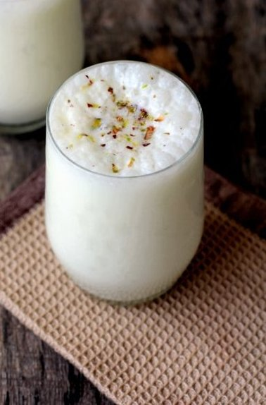

Sweet Lassi

Description
Lassi is a cooling, refreshing, probiotic drink perfect for the warm summer months.
Popular in Punjab and North India, there are many variations of this sweet lassi recipe.
Relished in hot summers because of its cooling properties,
we often make lassi using a wooden churner and blender
(called as madani, in Punjabi and Hindi language).
You can choose to blend the lassi ingredients in a blender or
with a wired whisk or immersion blender.
Ingredients
- 2 cups Curd cold and fresh yogurt
- 1 cup water or milk cold or at room temperature
- 4 to 5 tablespoons sugar or add as per taste
- 1 teaspoon cardamom powder or 8 to 10 green cardamoms or 1 tablespoon rose water
- 10 to 12 saffron strands
- 6 to 8 ice cubes
- 1 to 2 tablespoons chopped nuts cashews/almonds/pistachios
Steps
- In a mortar, take the green cardamom pods and crush them lightly.
Remove the husks and crush the seeds to a fine powder.
- In a bowl or pan, take fresh chilled curd (yogurt).
- With the handheld wooden churner (madani)or blender or wired whisk,
simply whisk the curd until it becomes smooth.
- Add sugar and cold water. You can also add cold milk instead of water.
- The consistency of this lassi is neither thick nor thin. For a thin lassi,
add slightly more water and for a thicker version, add less water.
- Now churn or beat again with the churner, blender or wired whisk.
- Keep on churning or whisking until the sugar dissolves and you see a nice frothy layer on top.
You can use an immersion blender for the same.
Another way is to add all the ingredients in a blender jar
and blend until smooth and frothy.
- Now add the crushed cardamom powder and saffron strands. Mix well. Do check the taste and add more sugar if required.
- As a substitute for cardamom powder, add rose water. You can skip all the flavoring ingredients, if you don't have any.
- Pour lassi in tall glasses and serve. Add a few ice cubes if you prefer.
If you want, you can top lassi in each glass with 1 to 2 tablespoons of malai
(the thick layer of cream which collects on top of heated milk)
or 1 to 2 tablespoons of unsalted white butter (makhan).
- Garnish with a pinch or two of cardamom powder,
2 to 3 crushed saffron strands or chopped nuts like cashews, pistachios or almonds.
Serve sweet punjabi lassi straightaway.